- 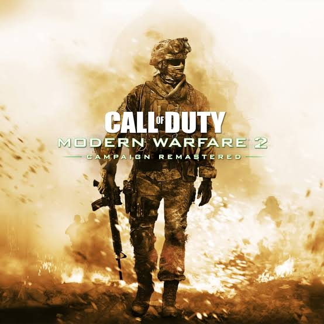 Call Off Dutty: Modern Warfare 2: 500 TL
- 64-bit işlemci ve işletim sistemi gerektirir.
- İşletim Sistemi: Windows 7 64-Bit or later
- İşlemci: Intel Core i3-3225 @ 3.30GHz or equivalent
- Bellek: 8 GB RAM
- Ekran Kartı: NVIDIA GeForce GTX 660 2GB / AMD Radeon HD 7850 2GB
- DirectX: Sürüm 11
- Ağ: Genişbant İnternet bağlantısı
- Ses Kartı: DirectX 11 Compatible
- İlave Notlar: Disk space requirement may change over time.
- 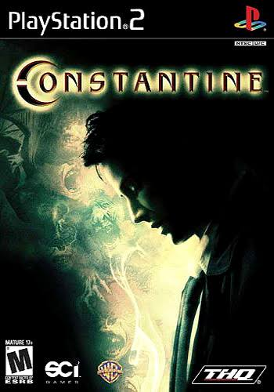 Constantine: 25 TL
- Windows XP ve üzeri
- 2.6 GHz Intel CPU
- 128 MB - Ekran Kartları
- 512 MB Ram Bellek
- 3 GB Disk'te Boş Yer
- 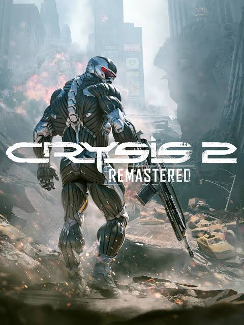 Crysis 2: 580 TL
- Windows OSWindows 10 64-Bit. Windows OSWindows 10 64-Bit latest update.
- Windows ProcessorIntel(R) Core(TM) i5-3470. Windows ProcessorIntel(R) Core(TM) i5-8600 or higher.
- Windows Memory8 GB. Windows Memory16 GB.
- Windows Storage54 GB. Windows Storage54 GB.
- Windows Direct XDX11
- Windows GraphicsNVIDIA GeForce GTX 1060.
- 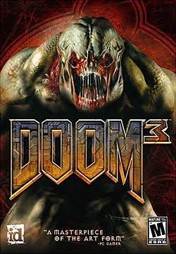 Doom 3: 25 TL
- OS:Windows vista/ Windows 7
- Processor:2.0 GHz dual core
- Memory:3 GB RAM
- Graphics:NVIDIA GeForce 9800 GT / ATI Radeon HD 5750, 512 MB video RAM
- Hard Drive:11 GB
- Sound:Windows compatible sound card
- 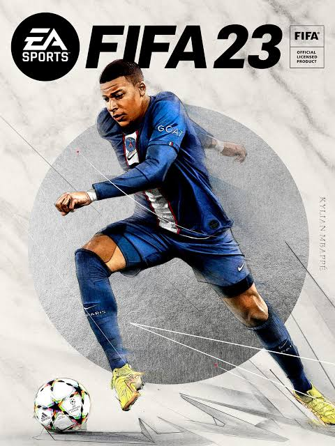 Fifa 2023:500-700(tahmini)
- CPU: Intel Core i5 6600k veya AMD Ryzen 5 1600.
- RAM: 8 GB RAM.
- GPU: NVIDIA GeForce GTX 1050 Ti veya AMD Radeon RX 570.
- DX: Version 12.
- İşletim Sistemi (OS): Windows 10 64-bit.
- Gereken Disk Alanı: 100 GB.
- Bağlantı: Geniş bant internet bağlantısı
- 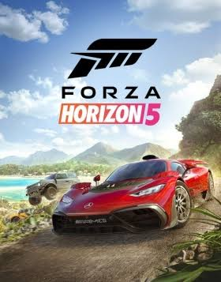 Forza Horizon 5: 539 TL
- Intel Core i5-4460 ya da AMD Ryzen 3 1200 işlemci.
- NVIDIA GeForce GTX 970 ya da AMD Radeon RX 470 ekran kartı
- 8 GB bellek.
- 110 GB disk alanı
- Windows 10 işletim sistemi.
- 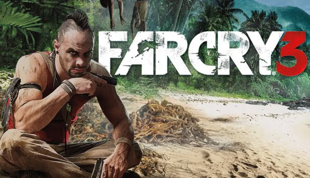 Far Cry 3: 89 TL
- OS:Windows XP, Windows Vista and Windows 7.
- Processor:Intel Core®2 Duo E6700 @ 2.6 GHz or AMD Athlon64 X2 6000+ @ 3.0Ghz or better.
- Memory:4 GB RAM.
- Graphics:512MB Video RAM (1GB Video RAM), DirectX9c (DirectX11) Shader Model 3.0 (Shader Model 5.0)
- DirectX®:9.0c.
- Hard Drive:15 GB HD space.
- 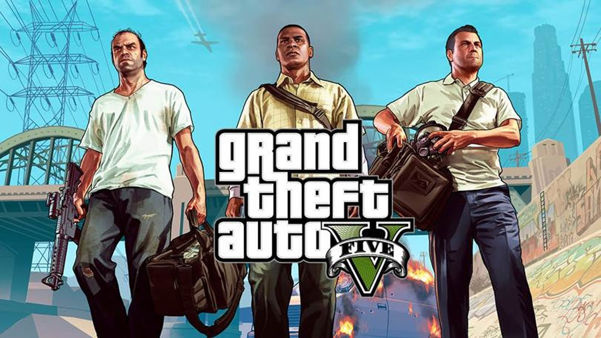 Grand Theft Auto 5: 350 TL
- 64-bit işlemci ve işletim sistemi gerektirir.
- İşletim Sistemi: Windows 8.1 64 Bit, Windows 8 64 Bit, Windows 7 64 Bit Service Pack 1
- İşlemci: Intel Core i5 3470 @ 3.2GHZ (4 CPUs) / AMD X8 FX-8350 @ 4GHZ (8 CPUs)
- Bellek: 8 GB RAM.
- Ekran Kartı: NVIDIA GTX 660 2GB / AMD HD7870 2GB.
- Depolama: 72 GB kullanılabilir alan.
- 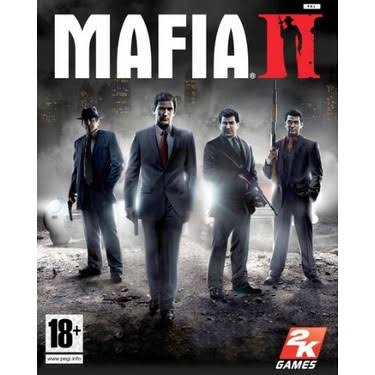 Mafia 2: 50 TL
- OS: Microsoft Windows XP (SP2 or later) / Windows Vista / Windows 7.
- Processor: Pentium D 3Ghz or AMD Athlon 64 X2 3600+ (Dual core) or higher.
- RAM: 1.5 GB RAM.
- Hard Disk Space: 8GB.
- Video Card: nVidia GeForce 8600 / ATI HD2600 Pro or better.
- Sound Card: 100% DirectX 9.0c compatible sound card.
- 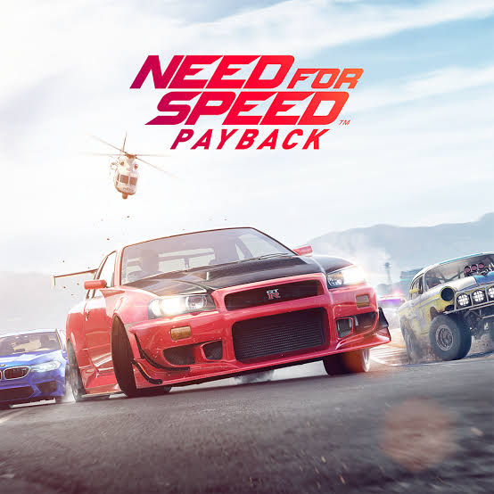 Need Foor Speed Payback: 300 TL
- İşletim Sistemi: 64-bit Windows 10 or later.
- İşlemci: Intel i5 4690K @ 3.5GHz or AMD FX 8350 @ 4.0GHz with 4 hardware threads.
- Bellek: 8 GB RAM.
- Ekran Kartı: AMD Radeon™ RX 480 4GB, NVIDIA GeForce® GTX 1060 6GB or equivalent DX11 compatible GPU with 4GB of memory.
- DirectX: Sürüm 11.
- Ağ: Genişbant İnternet bağlantısı
- 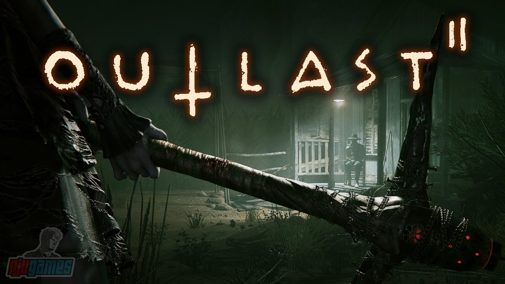 Outlast 2: 300 TL
- İşletim Sistemi: Windows Vista / 7 / 8 / 10, 64-bits.
- İşlemci: Intel Core i3-530.
- Bellek: 4 GB RAM.
- Ekran Kartı: 1GB VRAM, NVIDIA Geforce GTX 260 / ATI Radeon HD 4870.
- DirectX: Sürüm 10.
- Depolama: 30 GB kullanılabilir alan.
- Ses Kartı: DirectX Compatible.
- İlave Notlar: Targetting 720p @ 30 fps.
Boyut: 70 GB
Sistem Gereksinimleri
Boyut: 4.5 GB
Sistem Gereksinimleri
Boyut: 30 GB
Sistem Gereksinimleri
Boyut: 11 GB
Sistem Gereksinimleri
Boyut: 100 GB
Sistem Gereksinimleri
Boyut: 110 GB
Sistem Gereksinimleri
Boyut: 20 GB
Sistem Gereksinimleri
Boyut: 120 GB
Sistem Gereksinimleri
Boyut: 10 GB
Sistem Gereksinimleri
Boyut: 30 GB
Sistem Gereksinimleri
Boyut: 40 GB